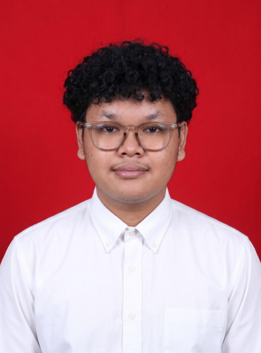

Mahasiswa D4 program studi Teknik Informatika Politeknik Negeri Jember PSDKU Nganjuk yang memiliki minat kuat di bidang Web Development dan Marketing. Memiliki pengalaman dalam desain UI/UX dengan rekam jejak yang baik dalam efisiensi waktu. Saya memiliki antusias untuk memberikan kontribusi dan terus belajar dalam lingkungan kerja.
Membantu dalam pengelolaan produk yang ditawarkan dan melayani konsumen. Serta menganalisis laporan keuangan bulanan secara manual. Selain itu juga memberikan pelayanan terbaik untuk pelanggan dengan mengutamakan keramahan.
Merancang tampilan aplikasi SI-KESA sesuai dengan URS (User Requirement Specification) yang diberikan oleh Project Manager.
Melakukan coding tampilan untuk bagian guru pada website "SI-KESA". Mengidentifikasi dan memperbaiki error yang muncul saat sistem berjalan.
Membantu dalam perancangan serta pembuatan aplikasi. Melakukan pengambilan data dan wawancara secara langsung dengan pemilik mitra Refi Frozen Food untuk menganalisis kebutuhan sistem.